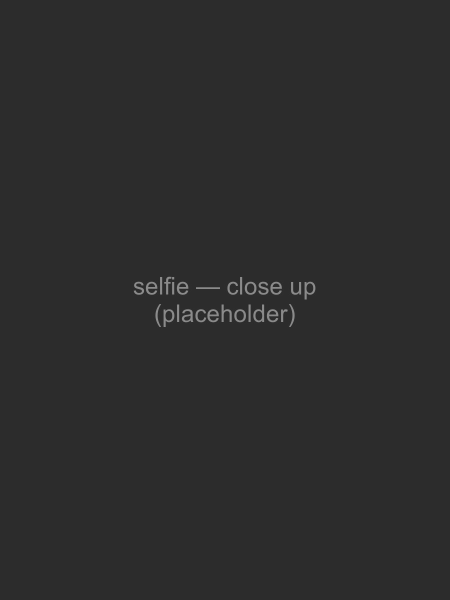
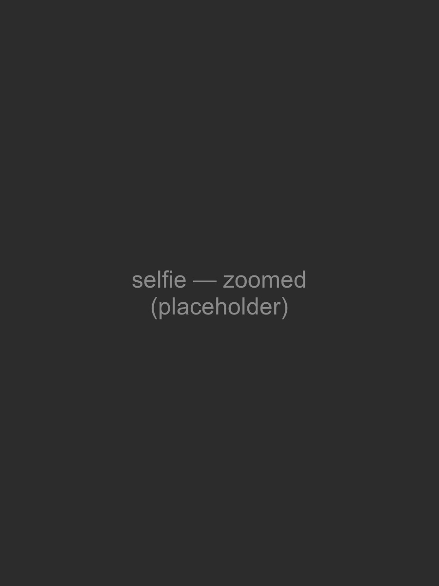
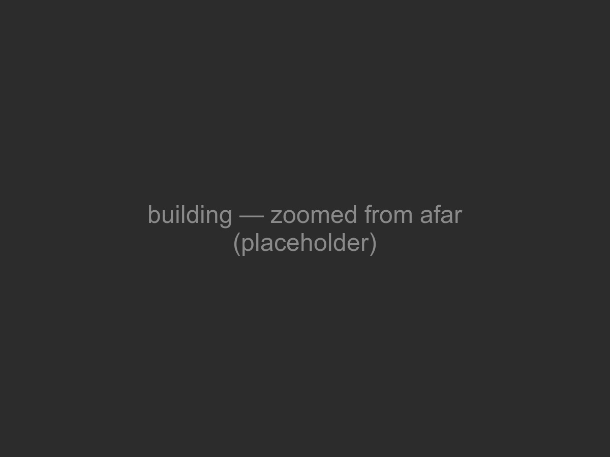
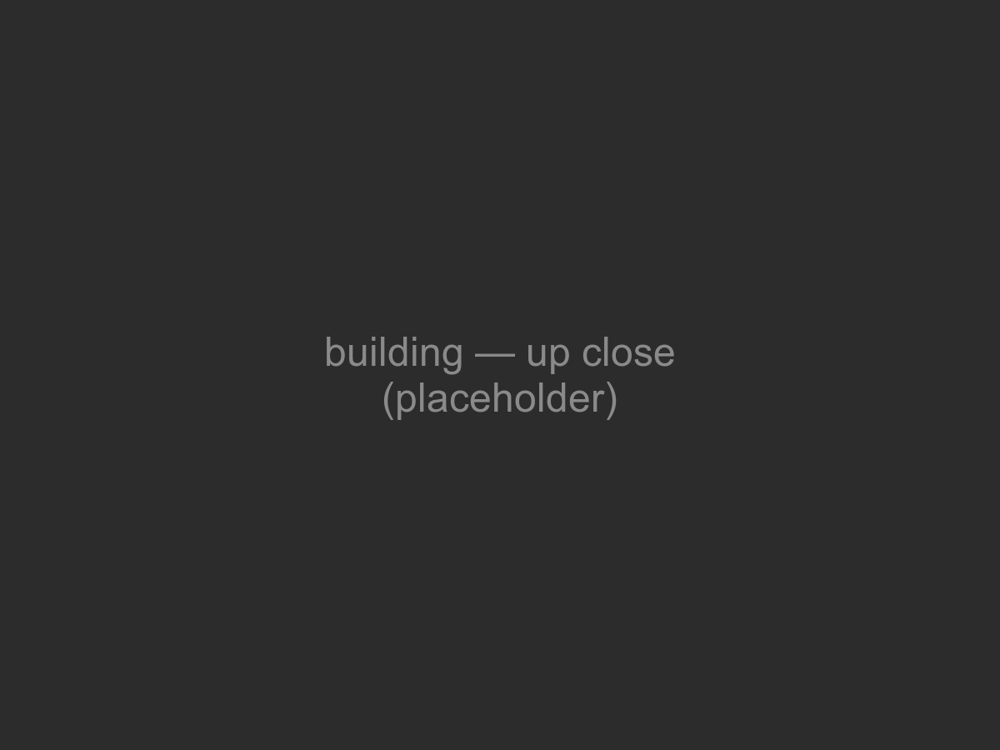

becoming friends with your camera
three small experiments with a camera, exploring the relationship between perspective, focal length, and the center of projection.
part 1 · selfie: the wrong way vs. the right way
the same portrait taken two ways: first from close up, then from several feet back with the camera zoomed in so the face stays the same size.


todo: your explanation of why the second portrait looks better goes here.
part 2 · architectural perspective compression
the same idea in reverse, for a building: first zoomed in from across a field, then walked up close with no zoom, keeping the building roughly the same size in frame.


todo: your explanation of why the zoomed photo looks compressed goes here.
part 3 · the dolly zoom
the vertigo shot: moving the camera backward while zooming in, keeping the subject the same size, so the background appears to stretch away.

todo: a sentence or two about your scene/setup goes here.